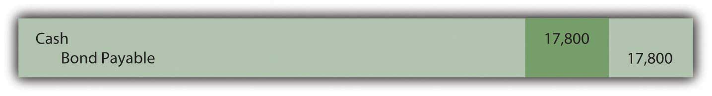
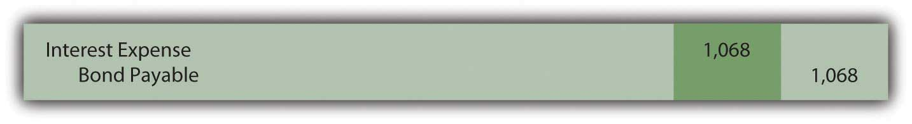
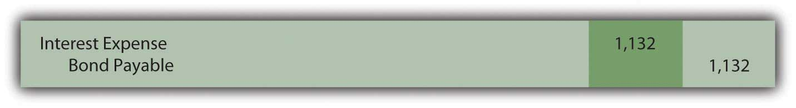
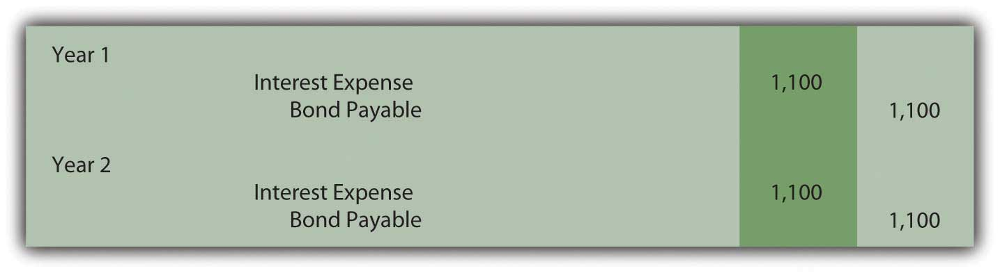

At the end of this section, students should be able to meet the following objectives:
Question: A wide array of bonds and other types of financial instruments can be purchased from parties seeking money. A zero-coupon bond is one that is popular because of its ease. The face value of a zero-coupon bond is paid to the investor after a specified period of time but no other cash payment is made. There is no stated cash interest. Money is received when the bond is issued and money is paid at the end of the term but no other payments are ever made. Why does any investor choose to purchase a zero-coupon bond if no interest is paid?
Answer: No investor would buy a note or bond that did not pay interest. That makes no economic sense. Because zero-coupon bonds are widely issued, some form of interest must be included. These bonds are sold at a discount below face value with the difference serving as interest. If a bond is issued for $37,000 and the company eventually repays the face value of $40,000, the additional $3,000 is interest on the debt. That is the charge paid for the use of the money that was borrowed. The price reduction below face value can be so significant that zero-coupon bonds are sometimes referred to as deep discount bonds.
To illustrate, assume that on January 1, Year One, a company offers a $20,000 two-year zero-coupon bondBonds that include no interest payments although the entire maturity value is due at the end of a specified time; these debts are issued at a discount so that the difference between the cash paid at the beginning and the cash received on the maturity date represents interest over that time period. to the public. A single payment of $20,000 will be made to the bondholder on December 31, Year Two. According to the contract, no other cash is to be paid. An investor who wishes to make a 7 percent annual interest rate can mathematically compute the amount to pay to earn exactly that interest. The debtor must then decide whether to accept this offer.
Often, the final exchange price for a bond is the result of a serious negotiation process to determine the interest rate to be earned. As an example, the potential investor might offer an amount that equates to interest at an annual rate of 7 percent. The debtor could then counter by suggesting 5 percent with the two parties finally settling on a price that provides an annual interest rate of 6 percent. In the bond market, interest rates are the subject of intense negotiations. After the effective rateThe interest rate determined by negotiation and market forces that is used to set the price of bonds; it is also called the yield rate or negotiated rate and often varies from the stated interest rate used to establish cash interest payments. (also called the yield or negotiated rate) has been established by the parties, the actual price of the bond is simply a mathematical computation.
Question: A $20,000 zero-coupon bond is being issued by a company. According to the indenture, it comes due in exactly two years. The parties have negotiated an annual interest rate to be earned of 6 percent. How is the price to be paid for a bond determined after an effective rate of interest has been established?
Answer: Determination of the price of a bond is a present value computation in the same manner as that demonstrated previously in the coverage of intangible assets. Here, a single cash payment of $20,000 is to be made by the debtor to the bondholder in two years. The parties have negotiated an annual 6 percent effective interest rate. Thus, a portion of the future cash ($20,000) serves as interest at an annual rate of 6 percent for this period of time. In a present value computation, total interest at the designated rate is calculated and subtracted to leave the present value amount. That is the price of the bond, often referred to as the principal. Interest is computed at 6 percent for two years and removed. The remainder is the amount paid for the bond.
http://www.principlesofaccounting.com/ART/fv.pv.tables/pvof1.htm
The present value of $1 in two years at an annual rate of interest of 6 percent is $0.8900. This can be found by table, by formula, or by use of an Excel spreadsheet.As explained in Chapter 11 "In a Set of Financial Statements, What Information Is Conveyed about Intangible Assets?", the present value of $1 can be mathematically determined using the formula $1/(1 + i)n. Here, i is 0.06 and n is two periods. Present value can also be determined using an Excel spreadsheet. The present value of $1 at 6 percent in two periods is found by typing the following formula into a cell: =PV(.06,2,,1,0). Because the actual payment is $20,000 and not $1, the present value of the cash flows from this bond (its price) can be found as follows:
present value = future cash payment × $0.8900 present value = $20,000 × $0.8900 present value = $17,800Bond prices are often stated as a percentage of face value. Thus, this bond is sold to the investor at “89” ($17,800/$20,000), which indicates that the price is 89 percent of the face value. The price is the future cash payments with the negotiated rate of interest removed. If the investor pays $17,800 today and the debtor returns $20,000 in two years, the extra $2,200 is the interest. And, mathematically, that extra $2,200 is exactly equal to interest at 6 percent per year.
The issuance is recorded through the following entry.The entry shown here can also be recorded in a slightly different manner. As an alternative, the liability is recorded at its face value of $20,000 with a separate discount of $2,200 also included. The discount serves as a contra account to reduce the net liability balance to its principal amount. Although mechanically different, the liability is still shown as $17,800.
Figure 14.7
Figure 14.8 January 1, Year One—Zero-Coupon Bond Issued at Effective Annual Rate of 6 Percent
Link to multiple-choice question for practice purposes: http://www.quia.com/quiz/2093023.html
Question: This $20,000 zero-coupon bond is issued for $17,800 so that a 6 percent annual interest rate will be earned. As shown in the above journal entry, the bond is initially recorded at this principal amount. Subsequently, two problems must be addressed by the accountant. First, the company will actually have to pay $20,000. The $17,800 principal balance must be raised to that figure. The liability should be reported as $20,000 at the end of Year Two. Second, the $2,200 difference between the amount received and the eventual repayment ($20,000 less $17,800) has to be recognized as interest for these two years. The additional payment is the cost of the debt, the interest. To arrive at fairly presented figures, these two problems must be resolved. How is a zero-coupon bond reported in the period after its issuance?
Answer: In Chapter 11 "In a Set of Financial Statements, What Information Is Conveyed about Intangible Assets?", the effective rate method of reporting a present value figure over time was demonstrated. It solves both of the accounting problems mentioned here. The debt balance is raised gradually to the face value and interest of 6 percent is reported each year over the entire period.
Interest for Year One should be the $17,800 principal balance multiplied by the effective interest rate of 6 percent to arrive at interest expense for the period of $1,068. However, no payment is made. Thus, this interest is compounded—added to the principal. Interest that is recognized but not paid at that time must be compounded.
Figure 14.9 December 31, Year One—Interest on Zero-Coupon Bond at 6 Percent RateIf a discount is recorded in the initial entry as is shown in the previous footnote, the credit here is to the Discount account and not directly to the bond payable. The contra account is reduced so the net liability balance increases. Thus, overall reporting of the interest and the liability is not impacted by the method used in recording the issuance of the bond.
The compounding of this interest raises the principal by $1,068 from $17,800 to $18,868. The balances to be reported in the financial statements at the end of Year One are as follows:
| Year One—Interest Expense (Income Statement) | $1,068 |
| December 31, Year One—Bond Payable (Balance Sheet) | $18,868 |
Interest for Year Two is 6 percent of the new liability balance of $18,868 or $1,132 (rounded). The principal is higher in this second year because of the compounding (addition) of the first year interest. If the principal increases, subsequent interest must also go up.
Figure 14.10 December 31, Year Two—Interest on Zero-Coupon Bond at 6 Percent Rate
Note that the bond payable balance has now been raised to $20,000 as of the date of payment ($17,800 + $1,068 + $1,132). In addition, interest expense of $2,200 ($1,068 + $1,132) has been recognized over the two years. That was exactly 6 percent of the principal in each of the two years. Total interest reported for this zero-coupon bond is equal to the difference between the amount received by the debtor and the face value repaid. Both of the accounting problems have been resolved through use of the effective rate method.
The $17,800 price of the bond was computed mathematically based on
If interest is then recognized each period based on this same set of variables, the resulting numbers will reconcile. Interest expense for the two years has to be $2,200 and the final liability balance must come back to $20,000.
Link to multiple-choice question for practice purposes: http://www.quia.com/quiz/2093003.html
Link to multiple-choice question for practice purposes: http://www.quia.com/quiz/2092980.html
Question: This bond was sold at the present value of its future cash flows based on a rate of interest negotiated by the parties involved. Interest was then recognized periodically by applying the effective rate method. Is the effective rate method the only acceptable technique that can be used to compute and report interest when the face value of a debt differs from its issue price?
Answer: Interest can also be calculated for reporting purposes by a simpler approach known as the straight-line method. Using this technique, an equal amount of the discount is assigned to interest each period over the life of the bond. This zero-coupon bond was sold for $2,200 below face value to provide interest to the buyer. Payment will be made in two years. The straight-line method simply recognizes interest of $1,100 per year ($2,200/2 years).
Figure 14.11 December 31, Years One and Two—Interest on Zero-Coupon Bond at 6 Percent Rate—Straight-Line Method
Once again, the bond payable balance has been raised to $20,000 at the end of the second year ($17,800 + $1,100 + $1,100) and total interest expense over the life of the bond equals the $2,200 discount ($1,100 + $1,100). However, a question should be raised as to whether the information reported under this method is a fairly presented portrait of the events that took place. Although the bond was sold to earn 6 percent annual interest, this rate is not reported for either period.
Year One: $1,100 interest/$17,800 principal = 6.2 percent
Compounding of the interest raises the principal by $1,100 to $18,900
Year Two: $1,100 interest/$18,900 principal = 5.8 percent
In reality, the parties established an annual rate of 6 percent for the entire two-year period. When applying the straight-line method, this actual rate is not shown for either year. Furthermore, the reported interest rate appears to float (6.2 percent to 5.8 percent) as if a different rate was negotiated for each year. That did not happen; there was a single 6 percent interest rate agreed-upon by the debtor and the creditor.
The straight-line method does not reflect the reality of the transaction. However, it can still be applied according to U.S. GAAP but only if the reported results are not materially different from those derived using the effective rate method.
Link to multiple-choice question for practice purposes: http://www.quia.com/quiz/2093004.html
Zero-coupon bonds pay no cash interest. They are sold at a discount to provide interest to the buyer. The price of the bond is determined by computing the present value of the required cash flows using the effective interest rate negotiated by the two parties. Present value represents the principal of the debt with all future interest mathematically removed. The bond is recorded at this principal. Interest is subsequently determined each period based on the effective rate. Because no cash interest is paid, the entire amount recognized as interest must be compounded (added) to the principal. The straight-line method can also be used to record interest if the resulting numbers are not materially different from the effective rate method. This alternative assigns an equal amount of the discount to interest each period over the bond’s life.